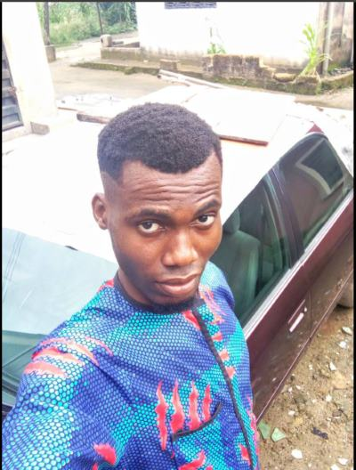

Godwin Inyang | WDD 130

Hi 👋🏼, I'm Godwin Inyang, a passionate web designer in the making 🚀. I'm currently perfecting my skills in web design, learning to craft visually stunning and user friendly websites. With a keen eye for detail and love for creativity, I'm excited to bring your digital vision to life. When I'm not designing, you'll likely find me playing or watching football ⚽ - it's my go-to hobby! Let create something amazing together! :::: Placeholder content :::: hsgsvbdggsbbshhzbhh dhhgdggdgdgd jhhjdsghhhhhhhhhhhhhh vvggggfhghgfhfgfggfgfgf gvghhghggvhghghggghghg gyyggygyggygyg